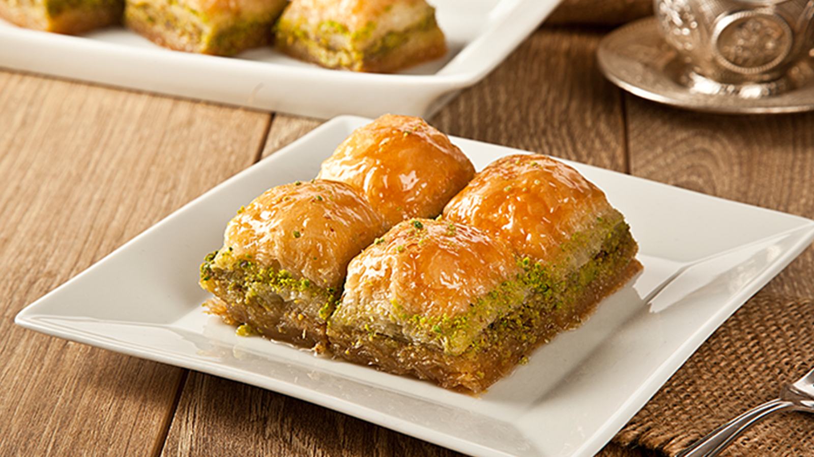
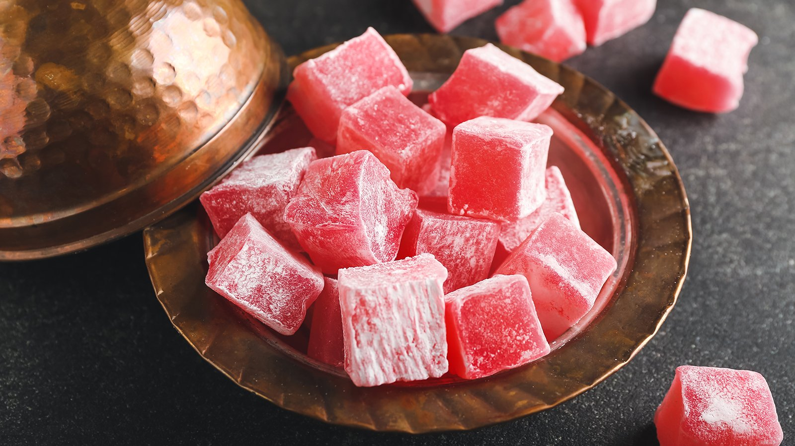
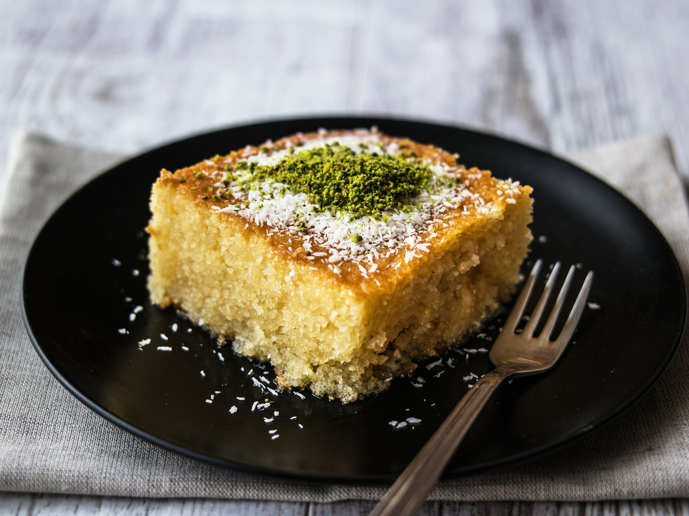
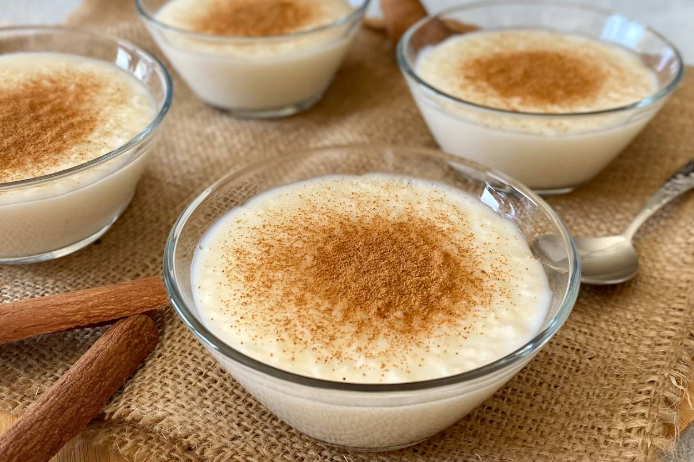
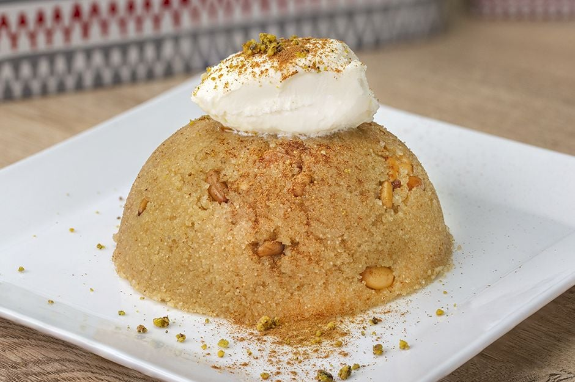
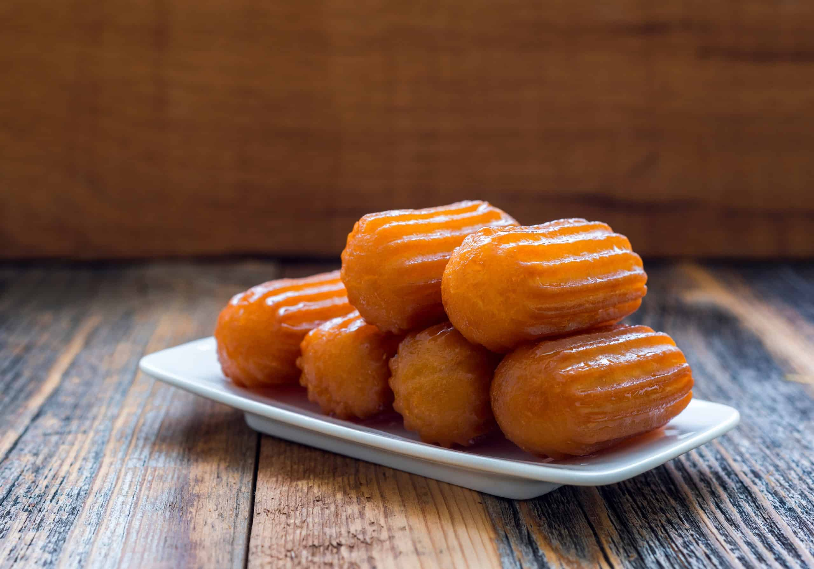
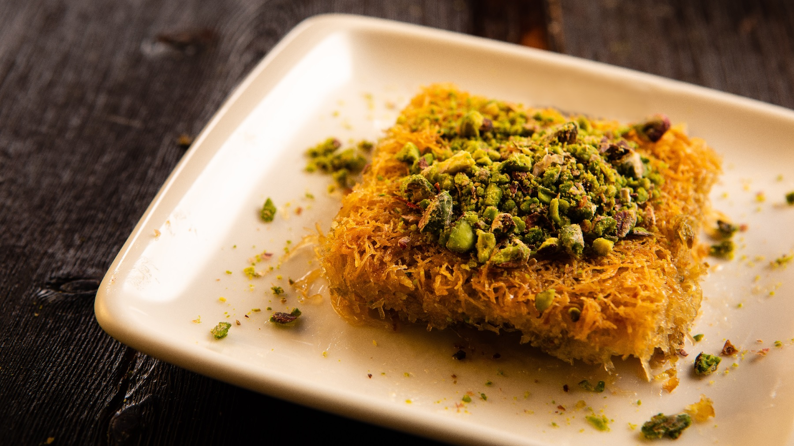

Baklava
Baklava, ince hamur katmanları arasında ceviz veya fıstık iç harcı bulunan, şerbet veya bal ile tatlandırılan geleneksel bir tatlıdır. Türk mutfağından köken alan baklava, çeşitli türleriyle dünya genelinde popülerdir. Hazırlık aşamaları arasında hamurun inceltilmesi, katmanların arasına yağ sürülmesi, kesilmesi ve pişirilmesi yer alır. Cevizli, Antep fıstıklı ve özel iç harçlı çeşitleri bulunur. Baklava, özellikle özel günlerde ve bayramlarda sıkça tüketilen bir tatlıdır.
Künefe

Künefe, ince tel kadayıfın içine beyaz peynir veya lor peyniri konularak yapılan ve şerbetle tatlandırılan geleneksel bir Türk tatlısıdır. Genellikle fırında veya sac üzerinde pişirilir, sıcak servis edilir. Farklı çeşitleri bulunsa da peynirli ve kremalı künefe en yaygın olanlarıdır. Osmanlı dönemine uzanan köklü bir geçmişi vardır ve özellikle Güneydoğu Anadolu mutfağında önemli bir yere sahiptir.
Lokum
Lokum, şeker, nişasta ve su karışımının çeşitli lezzetlerle tatlandırılarak hazırlanan geleneksel bir Türk tatlısıdır. Genellikle küp veya dikdörtgen şeklinde kesilir, pudra şekeri veya hindistancevizi ile kaplanarak sunulur. Osmanlı İmparatorluğu'ndan günümüze uzanan köklü bir geçmişi vardır ve Türk kahvesi eşliğinde keyifle tüketilir. Farklı çeşitleri arasında geleneksel, fındıklı ve çikolatalı lokum bulunmaktadır.
Revani
Revani, Türk mutfağına ait, irmik ve yumurta içeren özel bir hamurun hazırlanmasıyla yapılan bir şekerpare türüdür. Genellikle üzerine şeker şurubu veya pekmez dökülerek tatlandırılır. Fırında pişirilen revani, dilimlenerek servis edilir ve üzerine genellikle hindistancevizi, fındık veya ceviz serpilir. Hafif ve yumuşak dokusuyla bilinen revani, özellikle özel günlerde ve davet sofralarında tercih edilen bir tatlıdır.
Sütaç
Sütlaç, Türk mutfağına ait geleneksel bir sütlü tatlıdır. İçeriğinde pirinç, süt, şeker ve vanilin bulunur. Pirinç, süt ile birlikte kaynatılarak koyu bir kıvam alana kadar pişirilir. Şeker ve vanilin eklenerek tatlandırılır. Genellikle fırın kaplarında veya individual kaselere konularak üzeri kızarana kadar fırınlanır. Soğuduktan sonra buzdolabında dinlendirilir ve servis edilir. Sütlaç, Türk mutfağının sevilen ve sık tüketilen bir sütlü tatlısıdır.
İrmik Helvası
İrmik helvası, Türk mutfağına ait geleneksel bir tatlıdır. İrmik, tereyağı ve şekerin bir araya getirilmesiyle hazırlanan bu helva, genellikle özel günlerde ve davet sofralarında tercih edilir. Hazırlık aşamalarında irmik tereyağında kavrulur, üzerine şeker eklenir ve karamel rengini alana kadar karıştırılır. Sıcakken su veya süt ilave edilerek kıvam alır. İsteğe bağlı olarak içine çeşitli kuruyemişler veya tarçın eklenerek zenginleştirilebilir. İrmik helvası, sıcak veya soğuk olarak servis edilebilir ve üzerine hindistancevizi veya ceviz serpilerek süslenir. Yumuşak ve hafif dokusuyla bilinen irmik helvası, Türk mutfağının vazgeçilmez tatlılarından biridir.
Tulumba
Tulumba, Türk mutfağına ait klasik bir tatlıdır. Hamurunun özel bir şekilde hazırlanması ve kızgın yağda kızartılmasıyla elde edilen tatlı bir türdür. Tulumba tatlısı genellikle şeker şurubu veya bal ile tatlandırılır. Bu tatlı, genellikle üçgen veya silindirik bir şekle sahiptir ve üzerine pudra şekeri serpilerek servis edilir. Hafif kıtır dış kabuğu ve içindeki yumuşak kıvamıyla bilinen tulumba tatlısı, Türk mutfağının sevilen atıştırmalıklarından biridir.
Kadayıf
Kadayıf, ince tel tel doğranmış hamurun adıdır ve Türk mutfağında tel kadayıf ve burma kadayıf olmak üzere iki temel türü bulunur. Kadayıf, birçok tatlı ve hamur işinde kullanılır. Kadayıf dolması, şöbiyet, kadayıf tatlısı gibi çeşitli tatlılar ve baklavada kullanılan bir malzemedir. Hem şerbetli tatlılarda hem de tuzlu tariflerde kullanılarak geniş bir yelpazede lezzetler sunar.